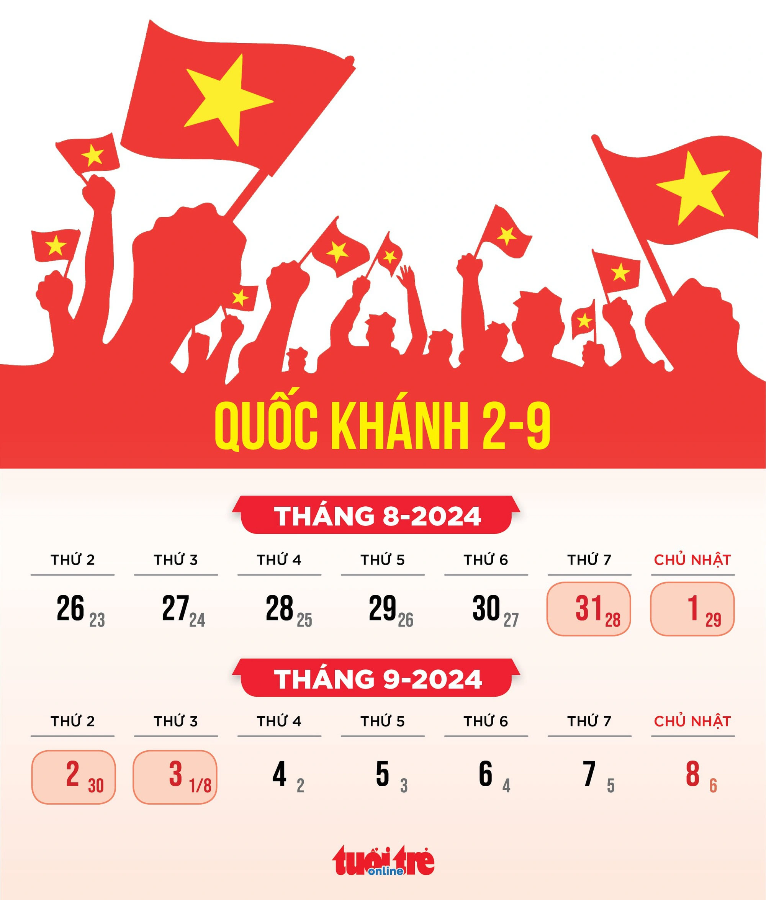

Kỳ nghỉ lễ Quốc khánh 2-9 năm 2024
“Dịp quốc khánh năm nay, … “
Hôm nay ngẫu hứng viết blog sau thời gian dài “kín tiếng trước truyền thông”. Vừa mở trình soạn thảo ra, mới viết được vài từ thì “em” thư ký AI chuyên gợi ý viết nhắc lệnh lập trình đã làm tôi không khỏi bất ngờ, bởi vì trước giờ cứ nghĩ ẻm giỏi code thôi, không ngờ lại còn biết cả viết lách nữa chứ
Khá khen, khá khen … nhưng tui hổng có mượn nhen ^^. Blog của tui, tui sẽ tự viết và bài viết bạn đang đọc là về kỳ nghỉ lễ Quốc khánh 2/9 phải nói là “vô tiền khoáng hậu” như năm nay.
Lịch nghỉ lễ quốc khánh 2/9 năm 2024
Nguồn: Báo Tuổi trẻ" width="35%">
Theo lịch, hai ngày nghỉ lễ sẽ là thứ hai (2-9) và thứ ba (3-9), cộng với hai ngày nghỉ thứ 7, chủ nhật hàng tuần tôi có 4 ngày nghỉ.
Kế hoạch nghỉ lễ
- 4 ngày: Ăn 🍴 🍽️
- 4 đêm: Ngủ 💤 🛌
- Còn lại những lúc không ăn, không ngủ: Chơi với thằng Cà Rốt 🥕🧑🌾
- Tùy hứng: Viết blog ✍🏻🧑🏻💻
Thực tế là….
Ngày 1: Thứ 7, 31-08-2024
Trong khi mọi người đều rời thành phố về quê hoặc đi du lịch, thì hai vợ chồng mình lại khăn gói đón xe vào lại Sài Gòn.
Số là hôm qua, thằng "báo 🐆 con" nhà mình nghịch mèo 😽 và bị nó táp cho một cái ngay ngón tay ☝🏻. Vết thương nhỏ xíu, còn con mèo nhà nuôi cũng đã được tiêm phòng hai mũi vaccine dại trước đó rồi, nhưng để yên tâm, mình quyết định đưa con đến viện Pasteur TPHCM để tiêm phòng bệnh dại.
Ngay hôm bị mèo cắn, mình chở con đến trung tâm tiêm chủng VNVC gần nhà để kiểm tra, được tư vấn phải tiêm thêm huyết thanh kháng dại và họ không có sẵn nên mới phải cất công vào lại Sài Gòn đó! Loại huyết thanh này chỉ có ở những bệnh viện lớn.


Mới đầu anh báo 🐆 nhà ta còn rất quỡn luôn, chạy nhảy, la hét khắp nơi. Một bác sĩ đi ngang sảnh chờ còn hỏi thằng này chích 💉 phải "vaccine sung" gì vậy 😅 haha? Cô điều dưỡng cũng giỡn kêu là: Giờ cười đi, ...lát khóc
Đúng là lát nữa chích ngừa không phải khóc thiệt, mà là khóc thét luôn
Ngày 2: Chủ nhật, 01-09-2024
Buổi sáng, mình đưa Cà rốt
Bác sĩ nói là con mình đang bị viêm nướu răng do vi khuẩn chứ không liên quan gì đến vaccine cả. Hèn chi hôm qua tới giờ nó cứ hay chỉ tay vào miệng và kêu đau. Mình nghĩ là do chích vaccine, bác sĩ cũng nói thêm là vaccine dại hiện nay đều sử dụng công nghệ mới, an toàn, không có tác dụng phụ cũng không ảnh hưởng gì đến sự phát triển của trẻ cả nên các ba mẹ cứ yên tâm nha. Bệnh dại rất nguy hiểm vì thế càng không được chủ quan. Khám xong, bác sĩ kê hai ngày thuốc để uống và cho đi về.

Buổi chiều chở Cà rốt đi bơi ở hồ bơi gần nhà.
Ảnh thích lắm, bơi miết kêu đi về không chịu mà phải bắt ép mới chịu về.


Kỳ nghỉ lễ Quốc khánh 2-9 năm 2024
https://thiennguyen.dev/2024/09/02/nhat-ky/2024-09-02-ky-nghi-le-quoc-khanh-2024/


Comments